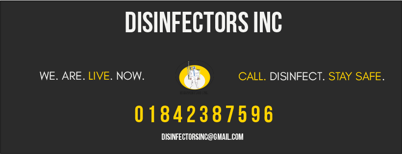

Saving Bangladesh
DISINFECTORS INC. is a privately funded six-month initiative aiming to make Dhaka safer for regular commute and cohabitation by ensuring sterile surroundings. This is a proactive effort in response to the global pandemic of COVID-19. Only a phone call away, it’s a service that provides on-demand disinfection of any private/public space.
This modest initiative looks forward to tackling the insurmountable task of helping Bangladesh recover from the ongoing health and economic crisis by connecting a hygiene-aware clientele to recently jobless people who have the skill, training and capabilities required.
Working alongside local communities, DISINFECTORS INC. will strive to eradicate our country of both health hazards and the economic stagnancy that tightens its grip every day as we suffer immeasurable losses.
#DISINFECTORSINC #DISINFECTION #PANDEMICSOLUTIONS
This modest initiative looks forward to tackling the insurmountable task of helping Bangladesh recover from the ongoing health and economic crisis by connecting a hygiene-aware clientele to recently jobless people who have the skill, training and capabilities required.
Working alongside local communities, DISINFECTORS INC. will strive to eradicate our country of both health hazards and the economic stagnancy that tightens its grip every day as we suffer immeasurable losses.
#DISINFECTORSINC #DISINFECTION #PANDEMICSOLUTIONS
